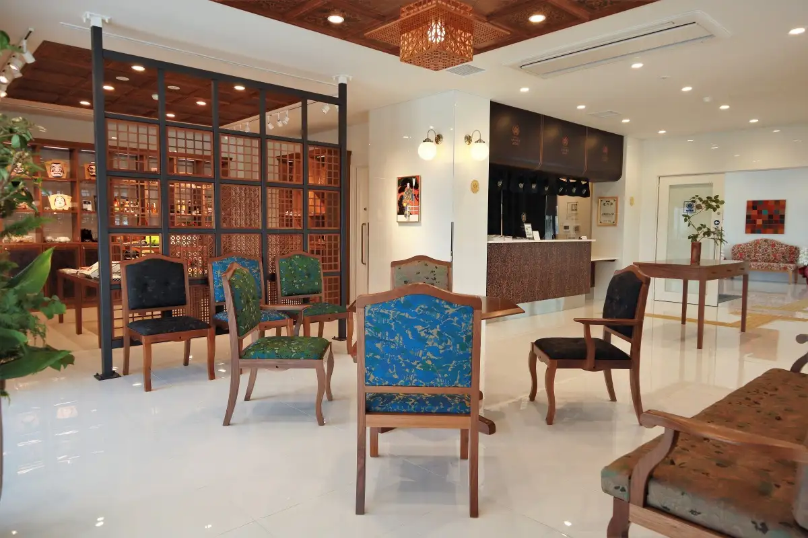

Japan / Okayama / Yakage
Yakage · Okayama
Yakage
Highlighted on the Okayama map.

City / town / village site
Yakage Ichi Tan
Yakage, Okayama · Official / source link
Nearby in Okayama: ← Wake · Akaiwa →
Other towns: Akaiwa · Asakuchi · Bizen · Hayashima · Ibara · Kagamino · Kasaoka · Kibichuo · Kumenan · Kurashiki · Maniwa · Mimasaka · Misaki · Nagi · Niimi · Nishiawakura · Okayama · Satosho · Setouchi · Shinjo · Shoo · Soja · Takahashi · Tamano · Tsuyama · Wake
All towns in Okayama · Back to all prefectures